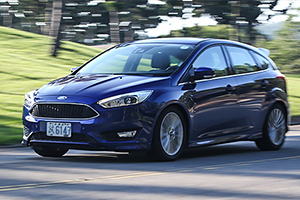
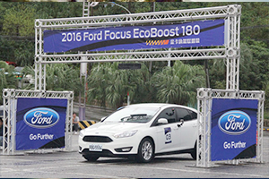
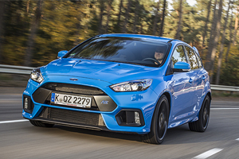
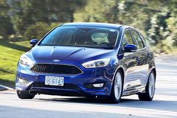
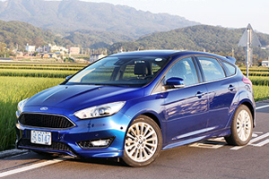
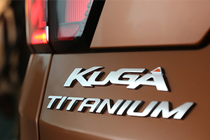
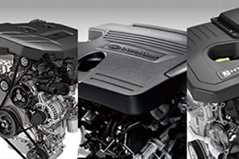

-
灌注賽道精神-認識Audi Sport品牌
提到Audi當家超跑R8，相信沒有人會忽略它的存在，Audi憑什麼打造出這世界上首屈一指的超跑呢？答案就在Audi Sport GmbH工廠裡；這裡就像一座神聖殿堂...
-

純粹的賽道魂魄-Audi RS家族車款介紹
Audi旗下性能最強悍的兵團，就屬R8及RS Models家族車款，為求最完美的性能表現，這些車款均交由Audi Sport GmbH工廠製作，未來還會導入RS4 Avant、RS5 Coupe及TT RS三款...
-

舒適與性能，諧和共存-Audi S家族車款介紹
許多人渴望擁有性能，但程度上因人而異，前一篇介紹的Audi RS家族車款是為極度熱血份子所打造，至於那些想要兼顧日常實用與舒適性...
延‧伸‧閱‧讀
-

四環的秘密 Audi品牌的誕生
Audi品牌的身世、其實就隱含在它們的四環標誌之中，代表了彼此之間完美的合作，更有著「獨立自主、團結且群策群力」的象徵意義...
-
經典成型 百年Audi經典車款介紹
自從1899年創立以來，曾經推出過Horch 303 Berlin搭載8缸引擎的豪華房車代表等膾炙人口且重要的量產車開許多創舉，更奠定Audi在車壇無可動搖的地位...
-

從ASF到ultra Audi的輕量化技術
不斷追求突破與創新的Audi，前身之一的A. Horch & Cie公司是德國第一個採用輕量化合金製造引擎及變速箱外殼的廠商，奠定輕量化與品牌間密不可分的關係...
-

跨足電動領域 Audi e-tron電動科技
給人十足前衛意象的Audi，這幾年更跨足電動車設計領域、推出多款搭載e-tron科技的實驗概念車，預言了環保的未來...
-

四驅先河 quattro科技30年
Audi是第一個設計出前置引擎、前輪驅動車款的品牌，最為人所津津樂道的，當屬問世至今已超過30年的quattro智慧型恆時四輪傳動系統...
-
稱霸利曼 回顧Audi百年賽車歷史
搭載quattro智慧型恆時四輪傳動系統的Audi quattro，幾乎橫掃了1980年代的WRC賽事打響了品牌名號...
-
高科技旗艦 Audi A6/A8
Audi總是不吝於將旗下最新科技下放在量產市售車型上，所以在A6與A8上、你不但能看見Audi的最新科技，還能預見新一代豪華房車的發展趨勢...
-

性能家族 Audi S/RS車系與R8
Audi不但稱霸WRC等賽事，以2003年於法蘭克福車展所發表的Le Mans概念車為藍本，推出品牌第一款超級跑車：R8，宣告跨足超跑領域...